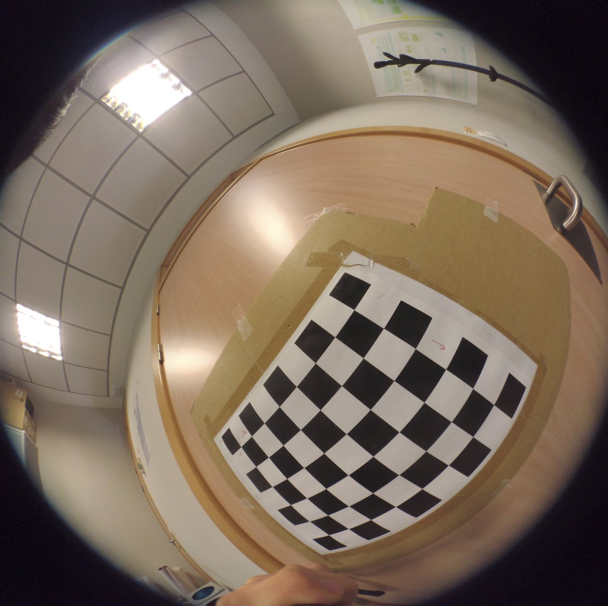
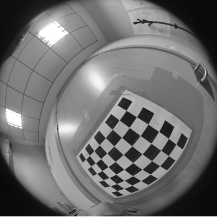
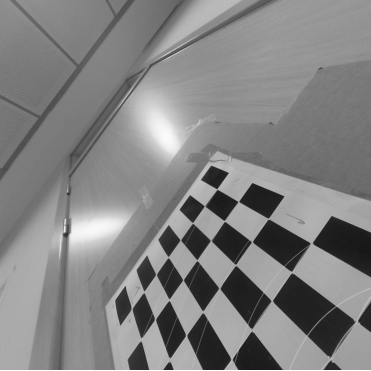

Original build
A Jupyter notebook using NumPy, OpenCV, and Matplotlib. The work includes calibration, rectification, reprojection, and failure analysis.
Project 04
A camera calibration workflow that uses checkerboard observations to estimate fisheye lens parameters, rectify distorted frames, and evaluate the result with reprojection error.
Calibration walkthrough
These are the actual outputs saved in the original notebook.

The lens model needs the checkerboard at different positions and angles. Frames where the pattern is incomplete or too distorted weaken the calibration.

findChessboardCorners locates the pattern, then cornerSubPix improves the coordinates before calibration.

Drag to compare the original fisheye projection with the OpenCV rectification.
OpenCV projects the known checkerboard points back into each image. The distance from the detected corners measures calibration quality. Frames 3 and 17 were excluded from the valid-sample mean after producing weak results.
Method
A Jupyter notebook using NumPy, OpenCV, and Matplotlib. The work includes calibration, rectification, reprojection, and failure analysis.
Wide-angle cameras provide useful field of view, but geometry-dependent tasks need a known camera model before measurements or localization are trustworthy.
The page does not recompute a 26-frame calibration. It exposes the exact notebook artifacts in a focused step-by-step comparison.
Open the notebook ↗